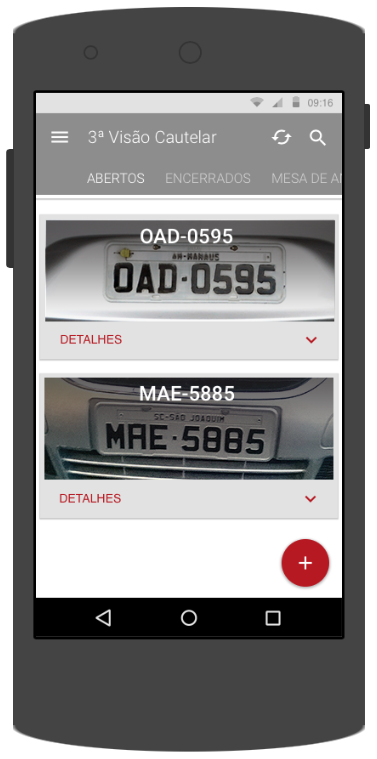

Protótipo App
Android
Objetivo app para vistoria veicular
Criação e prototipação de um aplicativo mobile para o segmento de vistoria cautelar. O solicitante, a empresa 3ª Visão – Perícias e Vistorias Automotivas é especializada no segmento e um dos clientes da Oxxygen Tecnologia; o aplicativo é uma solução baseada e integrada ao sistema web, comtemplando todo o fluxo de emissão: Ordens de Serviço, Laudos, Mesa de Análise e Pesquisas Veiculares.
Protótipo proto.io
A prototipação do app foi desenvolvida na plataforma online proto.io; que possibilitou ao cliente ter uma excelente experiência da usabilidade do aplicativo, validação do fluxo e design do aplicativo.
